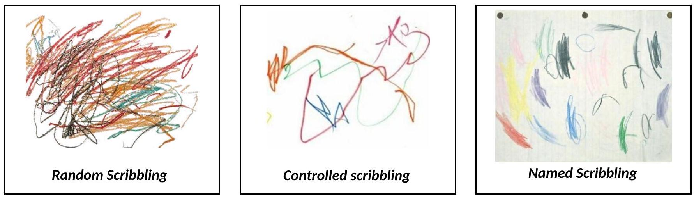
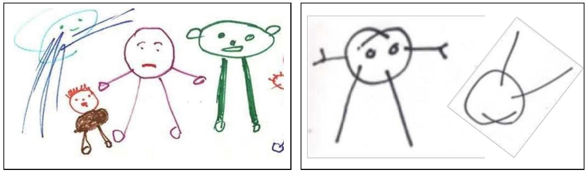
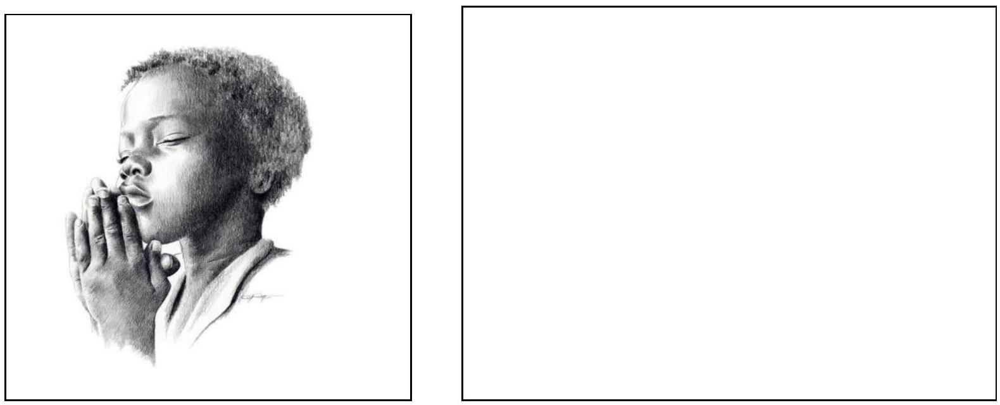

CHILD ART / CHILD ARTISTIC DEVELOPMENT
MACHAKOS TEACHERS' COLLEGE
ISO 9001:2015 Certified
DPTE - ART AND CRAFT
Artistic Developmental Stages
Children have an innate (natural / in-born) ability to do work. An average child undergoes the following stages in his Artistic development;
- Scribbling stage (2 - 4 yrs)
- Random /disordered scribbling.
- Controlled scribbling,
- Named scribbling
- Pre- schematic stage (4 - 6 yrs)
- Schematic stage (7-9 yrs)
- Gang age /dawning realism (9 - 11 yrs)
- Pseudo naturalistic (realistic) 11 - 13 yrs
- Artistic revival stage (age of decision making) 13-16 yrs
1. SCRIBBLING STAGE ( 2-4 YRS)
At this stage the child explores and enjoys manipulating various tools and materials. The stage is divided into three areas; a) Random /disordered scribbling: b) Controlled scribbling and c) Named scribbling.
a) Random / Disordered Scribbling
At this stage the child;
- Does not draw anything in particular.
- Explore materials in a playful way.
- Makes random marks which vary in size & length using any media and any surface.
- Enjoys making the scribbles and may carry the scribbles and may carry the scribbling activity on the walls furniture any available surface.
b) Controlled Scribbling
At this stage the child;
- Achieve a better vision & motor co-ordination and therefore makes more controlled marks.
- May repeat the same motion to create varying shapes.
c) Named Scribbling
At this stage the child begins to associate the scribbles he makes with known objects / persons. He scribbles unrecognizable things and gives them names. (Adults cannot recognize the scribbles).
TASK 12
- Search for and download samples of artwork done by children at each of these stages.
- Draw samples in you book to illustrate the art work produced by children at each of these developmental stages.
- Take photographs of the drawing and post the on the students art portal or class WhatsApp group.
- Discuss the link between the child's artwork with their cognitive, emotional and mental development.
- Search online for more characteristics of children artwork at these stages.
2. PRE- SCHEMATIC STAGE (4-6 YRS)
At this stage the child;
- Makes his 1st representational attempts. He can draw /make a representation if a man and other objects in his environment he is familiar with. They representations are usually drawn using circles, squares, triangles and lines.
- Has no space relation. The figures are randomly (haphazardly) placed on paper and drawn in varying sizes. Proportion does not matter to the child. Some figures may also be placed upside down as the child may rotate the paper several times when creating the artwork.
- When drawing a human figure, he starts with the head which is round like a ball he may draw the legs directly from the head. He may include other areas he is familiar with. (Human figures have large head and extended hands / Human figures are very simple with few features
- Objects drawn appear to float in space.
- May start drawing one thing and change it into something else by adding other parts
- Enjoys working with a variety of colours especially bright ones. The colors used may not be objectively used (not the colours of the actual items / There is no logical use of colour).
- Is eager to show his work and explain to other children and adults everything he has drawn / made without self-consciousness.
- Is ego - centric. Most objects drawn / made are connected to themselves e.g my mother, this is me, my car.
The teacher should not force the child out of the ego - centric stage but should suggest themes / topics that are related to the child personally e.g my home, my family.
3. SCHEMATIC STAGE (7-9 YRS)
At this stage the child;
- Develops symbolic representations (schema). A schema is a simplified diagram of how the child thinks figures should be drawn. The child develops a template (schema) of how to draw figures e.g a drawing of a cat may be drawn the same way in many drawings.
- Art work is based on emotional attachment. The child observes to details what interests him most. {the most parts are exaggerated & unimportant parts are omitted - This leads to distortion
- Arranges drawing in a line across the page. The child creates a base line to represent the ground and another for the sky.
- Draws one object after another in a line.
- Creates / tells stories based on their drawings
- Sometimes the objects appear to be drawn upside down or sideways. This is caused by the child's inability to create or show perspective in a conventional way.
- In later part of the stage some children create 'X-ray' drawings. These are drawing that show the outside as well as the inside of a structure. For example a child may draw a house or a vehicle and show all the occupants as though the walls are transparent.
4. GANG AGE /DAWNING REALISM / REPRESSION (Pre- teen) (9-11YRS)
At this stage the child;
- Likes working with peer groups (gang) cliques.
- Becomes aware of gender difference. The drawings / models of human figure are distinctly either male or female.
- Drawings are sometimes totally hidden because the child may have the great deal of self-criticism.
- Values any device or hint given by the teacher.
The teacher should exploit the situation and allow the children to work in group.
5. PSEUDO NATURALISTIC (REALISTIC) 11-13 YRS
At this stage the child;
- Produces most of his artwork from what he sees in his surrounding (from experience).
- Resorts to smaller detailed drawings.
- May also draw abstract shapes.
- Strives to create pictures as they appear in nature, however some children may not be able to achieve this. This marks the end of the natural development for some children due to the frustration of trying to get things right.
- Becomes aware of lack of or ability to draw figures at they appear in the environment.
- Is sometimes tempted to give up because there may be a great discrepancy between what the child imagines (or knows) and what he can actually do (This leads to frustrations and temptation to give up)
The teacher should encourage, motivate and inspire children to continue to do artworks.
6. ARTISTIC REVIVAL(renew) STAGE (AGE OF DECISION MAKING) 13-16 YRS
At this stage, some children create artworks that are detailed and show awareness of proportion, balance, harmony, space relation and tonal variation. Some children also become aware of how to overlap forms and create 3D effects in a drawing. However some are unable to develop this visual awareness naturally. To some this marks an end to their natural artistic development. Very often when adults are asked to draw their work is typical of 13 yr old children.
At 13years or later, is the stage at which a child can make a conscious decision to continue creating artworks (Artistic revival). To some extent the natural development of art stops here and there and has to be followed consciously.
TASK 13
In groups;
- Search for and download samples of artwork done by children at each of these stages.
- Ask at least five children between the age of 2 and 16 in your locality to draw or create an artwork of their choice.
- Analyse the characteristics of these artworks to determine their artistic developmental stage.
- Identify the artworks according to the cognitive and physical development of the child.
- Discuss the link between the child's artwork with their cognitive, emotional and mental development.
- Sort the artworks collected according to their characteristics and artistic developmental stage.
TASK 14
Discuss why it is important for a teacher to be familiar with the child's artistic developmental stage.
- To effectively plan for each age group.
- To identify and nurture the gifted and talented children.
- To monitor the child's cognitive, mental, emotional and physical development
- To understand the child's psychology - mental / physical / emotional / social
- To be able to effectively assess and evaluate the children's artwork.
- To select appropriate teaching approach for each age group.
- To identify students with special needs and create appropriate IEP
- To determine individual child's learning approach and employ suitable pedagogy
- To select appropriate (and suitable) materials and tools for the various age groups.
- FIND MORE ....